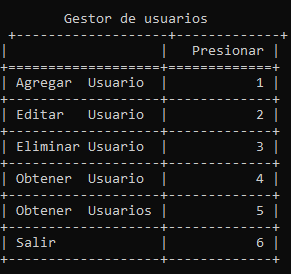
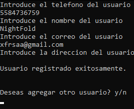
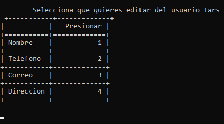
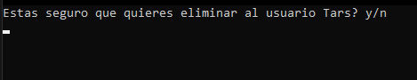
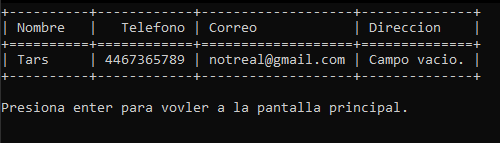
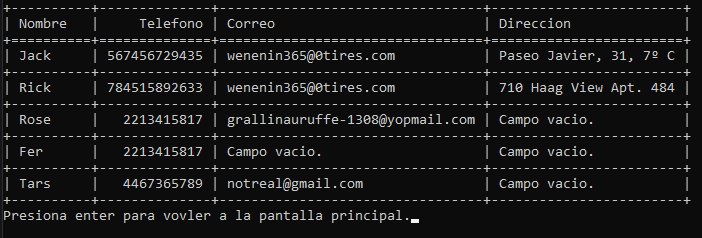

Python
Gestor de usuarios
Esta pequeña aplicación permite simular un gestor de contactos, en donde puedes agregar, eliminar y editar “contactos”. Todos los datos se guardan en una base de datos en formato JSON en la misma carpeta de la aplicación.
Ventanas
Ventana principal
Está primero la ventana principal; esta ventana se muestra para que selecciones la acción que quieres realizar. Hay 6 opciones: Agregar usuario, Editar usuario, Eliminar usuario, Obtener usuario, Obtener usuarios y Salir.
Las entradas para las respuestas se irán pidiendo conforme se vayan respondiendo.

Agregar usuario

Si se deja algún campo vacío, aparecerá Campo vacio. a la hora
de mostrar el usuario/usuarios.
La aplicación dará la opción de agregar otro usuario al terminar de agregar uno.
Editar usuario

Al elegir esta opción, se le pedirá al usuario que ponga el nombre, correo o número de teléfono del contacto que se quiere editar; una vez que la aplicación lo encuentre, aparecerá el menú de la imagen de arriba para que se seleccione la propiedad del usuario que se quiere modificar. Al terminar de editar la propiedad, se le preguntará al usuario si desea editar otra propiedad.
Eliminar usuario

Al elegir esta opción, se le pedirá igualmente al usuario que ingrese el usuario que desea eliminar mediante el nombre, correo o número de teléfono; si es que se encuentra, se le pedirá confirmar si realmente quiere eliminarlo.
Obtener usuario

Esta opción simplemente muestra la información completa de un usuario; la entrada pide que se ingrese el nombre, correo o teléfono del usuario del que se desea obtener información, al igual que las otras opciones.
Obtener usuarios

Esta opción muestra todos los contactos registrados en la base de datos.
Acerca de la estructura del programa
El programa está estructurado en 3 clases principales, cada una en un archivo diferente: la
clase Usuario.py, la clase
ManejadorDeVentana.py y la clase
GestorDeUsuarios.py. Solamente utilicé un módulo externo llamado
Tabulate
para poder imprimir la información en formato de tablas.
Todo el programa está orientado a objetos, cada cosa separada por esas clases para mantener todo muy limpio y escalable.
ManejadorDeVentana.py- El manejador de ventana se encarga de imprimir y manejar las funcionalidades del GestorDeUsuarios.
GestorDeUsuarios.py-
El gestor de usuarios se encarga de almacenar en la base de datos los usuarios, al igual que
cargarlos en un array de
Usuariosy gestionar todo lo que tenga que ver con usuarios, como crearlos, eliminarlos, buscar usuarios que coincidan con la información que se le dé a la función, etc. Usuario.py- La clase Usuario simplemente se encarga de manejar los setters y los getters del usuario, y unas funcionalidades extra, como comparar información para checar si coincide con alguno de los datos de la clase.